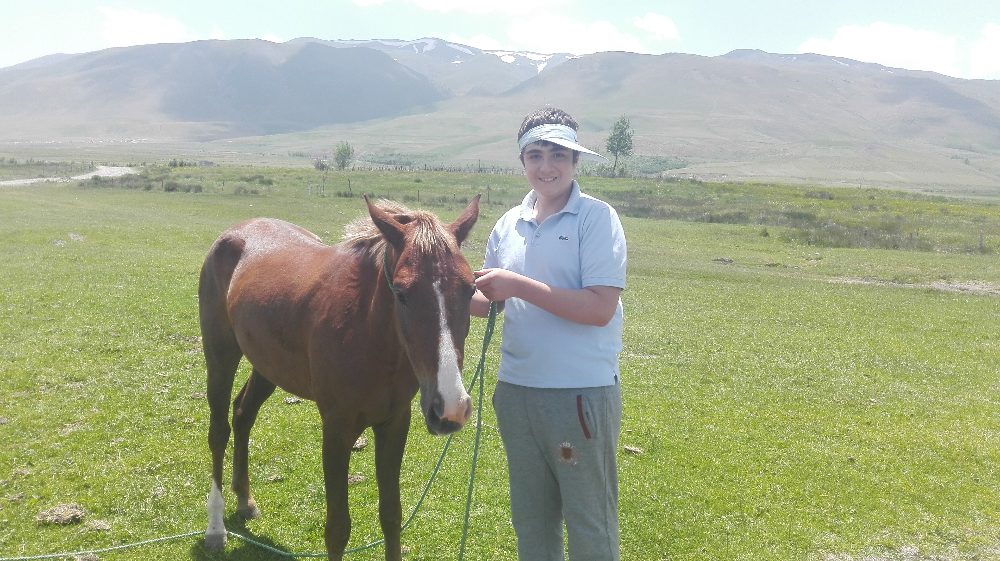
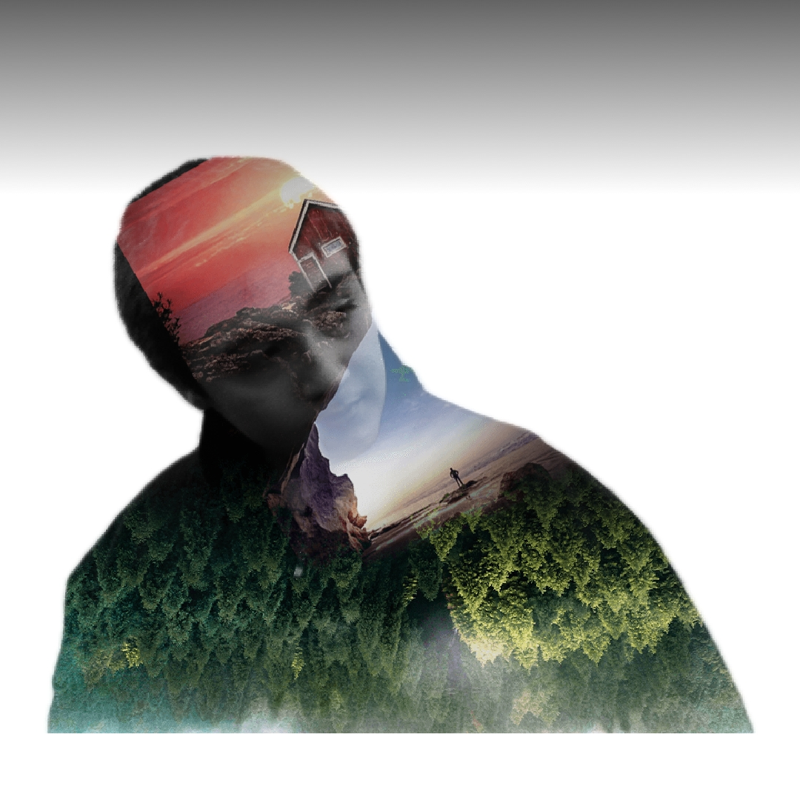
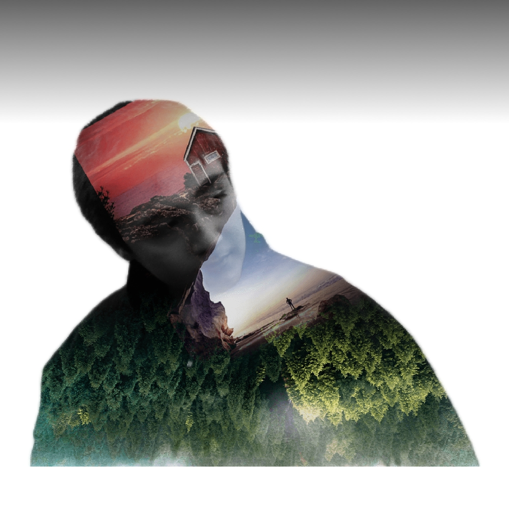
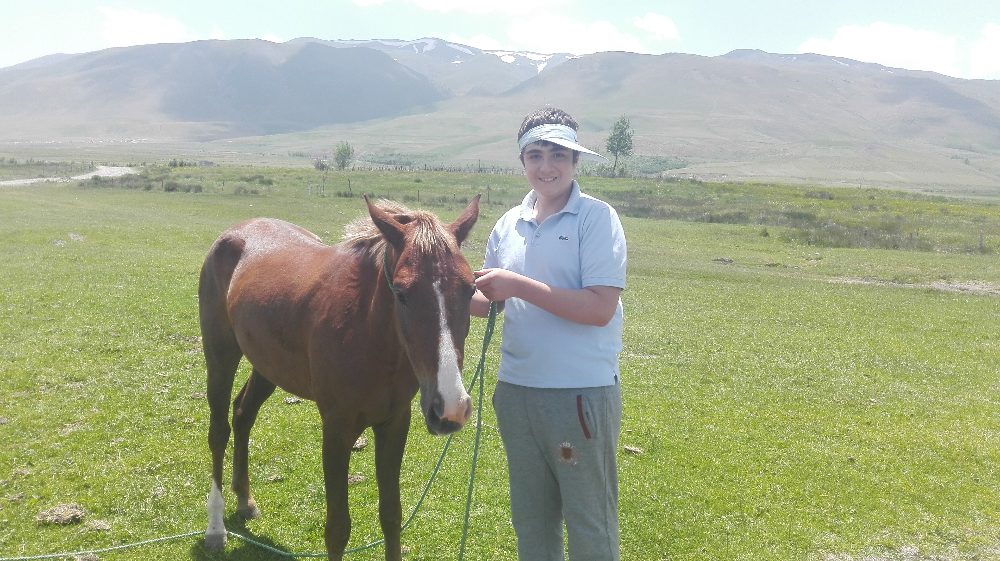

|  |  |
 |
 

THE BEST
ILIYA
AGHZADEH
If you want to know more about me please check out THIS link :) thanks.
میخواهم در بخش اوّل قدری درباره ی شخصیت خودم توضیح بدم.
اگر بخواهم بیشتر درمورد خودم توضیح بدم باید بگم که من عاشق برنامه نویسی هستم و همچنین در دروس حفظی هم توانایی های خوبی دارم و مشکل حفظ کردن هیچ کدام را ندارم و تقریبا در تمام دروس بهترین نمره ها را به دست میاورم.
اگر بخواهم علائق اجتماعی ام را بگویم باید لحاظ کنم که من از فیلم های کارآگاهی، جنایی ، جنگی ، و قدری خشن و درگیرانه و در صدر همه ی این ها هکری را دوست دارم.
درباره ی رفتار و کردار اجتماعی ام هم باید بگویم من فردی تقریبا تنها و گوشه نشین هستم ولی با هم سن های خودم بسیار راحت تر هستم و در کل فردی بخشنده هستم ولی اگر از کسی کینه ای به دل داشته باشم، هرگز ان را فراموش نمیکنم و حتما آن را تلافی میکنم. اگر هر کسی به غیر از پدر و مادرم باشند.
من فردی به شدت رقابت جو هستم و هرگز از حق خودم کوتاه نمی آیم و حتی اگر کار به جاهای باریک بکشد هم حتما طرف مقابل است که کوتاه میاید ولی آن فرد من نیستم.
به نظر خودم یکی از ویژگی های خوبی که دارم این است که هر کسی را به عنوان دوست انتخاب نمیکنم و به قول یکی از هم کلاسی هایمان، هر کسی باید کسی را به عنوان دوست خود انتخاب کند که بتواند اون را دوست بنامد.
من هرگز به یاد ندارم که اگر شکست خودره باشم، دوباره شروع نکرده باشم و همین موجب شده است که تا بحال به هر چیزی که میخواهم رسیده ام.
ولی یکی از ویژگی هایی که دیگران خیلی به من درباره ی آن هشدار میدهند این است که من با معنی کلمات خیلی بازی میکنم و حتی بعضی اوقات طعنه هایی با استفاده از همین بازی با کلمات به طرف مقابل میزنم که باعث ناراحتی آن ها میشود ولی خب....من از بعضی از افراد بعضی چیز ها را آموختم و این هم به نظرم یکی از مواردی است که در دنیای امروز و دنیایی که ما در عصر کنونی داریم در ان زندگی میکنیم، نیاز است.
در میان حیوانات هم من سگ را از هم بیشتر دوست دارم و نژاد های ژرمن شفرد و بلژیک شفرد نژاد های سگ مورد علاقه ی من هستند و بعد از سگ هم گربه را دوست دارم و بعد از آن هم اسب را خیلی دوست دارم.
|  | |
|
خب همانطور که میدانید من در مدرسه ی علامه حلی یک تحصیل میکنم و نمیگم به خودم بخاطر این موضوع افتخار میکنم ولی به نظرم نشان دهنده ی توانمندی های خودم به خودم است و از این موضوع خوشحال هستم.
THIS IS THE LINK OF MY SCHOOL
و خب هر موسسه و هرجایی بوده ام سعی کرده ام که بهترین باشم. سعی میکنم که همیشه بهترین خودم باشم با این که خیلی هم رقابت جو باشم و این باعث میشود که حتی اگر در یک امتحان را بد بدهم، کمتر ناراحت میشوم زیرا میدانم نهایت تلاشم را کرده ام.
در آموزشگاه واله رتبه ی زیر 10 کشوری بودم و مدال طلای ریاضی انتخابی آزمون جهانی لندن خانه ی ریاضی و مدال نقره ی علوم تجربی این مسابقه را دارم و خب دیپلم افتخار کانگورو.
| فوتبال | والیبال | بسکتبال | شنا | شطرنج | پینگ پونگ |
| مقدماتی و خودآموز وتفریحی | متوسط به بالا با پنج سال تجربه | متوسط به بالا و چهار سال تجربه | مقدماتی به بالا با دو سال تجربه | متوسط با دو سال تجربه | مقدماتی به بالا خودآموز با دو سال تجربه |